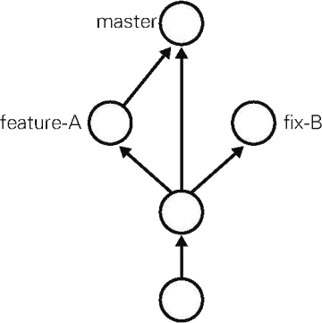
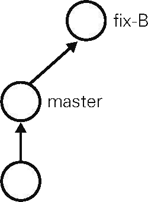
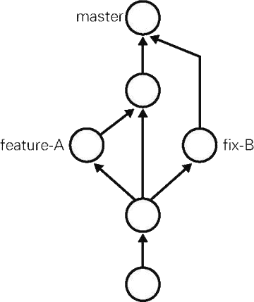
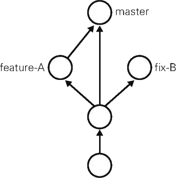

首页 > 编程笔记
git reset命令：回溯历史版本
通过前面学习的操作，我们已经学会如何在实现功能后进行提交，累积提交日志作为历史记录，借此不断培育一款软件。
Git 的另一特征便是可以灵活操作历史版本。借助分散仓库的优势，可以在不影响其他仓库的前提下对历史版本进行操作。
在这里，为了让各位熟悉对历史版本的操作，我们先回溯历史版本，创建一个名为 fix-B 的特性分支（图 1）。
要让仓库的 HEAD、暂存区、当前工作树回溯到指定状态，需要用到 git reset ——hard 命令。只要提供目标时间点的哈希值，就可以完全恢复至该时间点的状态。事不宜迟，让我们执行下面的命令。
接下来我们的目标是图 3 中所示的状态，即主干分支合并 feature-A 分支的修改后，又合并了 fix-B 的修改。
git log 命令只能查看以当前状态为终点的历史日志，所以这里要使用 git reflog 命令，查看当前仓库的操作日志。在日志中找出回溯历史之前的哈希值，通过 git reset ——hard 命令恢复到回溯历史前的状态。
首先执行 git reflog 命令，查看当前仓库执行过的操作的日志。
从上面数第四行表示 feature-A 特性分支合并后的状态，对应哈希值为 83b0b94。我们将 HEAD、暂存区、工作树恢复到这个时间点的状态。
Git 的另一特征便是可以灵活操作历史版本。借助分散仓库的优势，可以在不影响其他仓库的前提下对历史版本进行操作。
在这里，为了让各位熟悉对历史版本的操作，我们先回溯历史版本，创建一个名为 fix-B 的特性分支（图 1）。

图 1 回溯历史，创建 fix-B 分支
图 1 回溯历史，创建 fix-B 分支
回溯到创建feature-A分支前
前面我们在 feature-A 分支创建之前，创建一个名为 fix-B 的特性分支。要让仓库的 HEAD、暂存区、当前工作树回溯到指定状态，需要用到 git reset ——hard 命令。只要提供目标时间点的哈希值，就可以完全恢复至该时间点的状态。事不宜迟，让我们执行下面的命令。
$ git reset ——hard fd0cbf0d4a25f747230694d95cac1be72d33441d HEAD is now at fd0cbf0 Add index我们已经成功回溯到特性分支（feature-A）创建之前的状态。由于所有文件都回溯到了指定哈希值对应的时间点上，README.md 文件的内容也恢复到了当时的状态。
创建fix-B分支
现在我们来创建特性分支（fix-B）。$ git checkout -b fix-B Switched to a new branch 'fix-B'作为这个主题的作业内容，我们在 README.md 文件中添加一行文字。
# Git教程 - fix-B然后直接提交 README.md 文件。
$ git add README.md $ git commit -m "Fix B" [fix-B 4096d9e] Fix B 1 file changed， 2 insertions(+)现在的状态如图 2 所示。

图 2 当前 fix-B 分支的状态
图 2 当前 fix-B 分支的状态
接下来我们的目标是图 3 中所示的状态，即主干分支合并 feature-A 分支的修改后，又合并了 fix-B 的修改。

图 3 fix-B 分支的下一步目标
图 3 fix-B 分支的下一步目标
推进至feature-A分支合并后的状态
首先恢复到 feature-A 分支合并后的状态。不妨称这一操作为“推进历史”。git log 命令只能查看以当前状态为终点的历史日志，所以这里要使用 git reflog 命令，查看当前仓库的操作日志。在日志中找出回溯历史之前的哈希值，通过 git reset ——hard 命令恢复到回溯历史前的状态。
首先执行 git reflog 命令，查看当前仓库执行过的操作的日志。
$ git reflog
4096d9e HEAD@{0}：commit：Fix B
fd0cbf0 HEAD@{1}：checkout：moving from master to fix-B
fd0cbf0 HEAD@{2}：reset：moving to fd0cbf0d4a25f747230694d95cac1be72d33441d
83b0b94 HEAD@{3}：merge feature-A：Merge made by the 'recursive' strategy.
fd0cbf0 HEAD@{4}：checkout：moving from feature-A to master
8a6c8b9 HEAD@{5}：checkout：moving from master to feature-A
fd0cbf0 HEAD@{6}：checkout：moving from feature-A to master
8a6c8b9 HEAD@{7}：commit：Add feature-A
fd0cbf0 HEAD@{8}：checkout：moving from master to feature-A
fd0cbf0 HEAD@{9}：commit：Add index
9f129ba HEAD@{10}：commit (initial)：First commit
在日志中，我们可以看到 commit、checkout、reset、merge 等 Git 命令的执行记录。只要不进行 Git 的 GC（Garbage Collection，垃圾回收），就可以通过日志随意调取近期的历史状态，就像给时间机器指定一个时间点，在过去未来中自由穿梭一般。即便开发者错误执行了 Git 操作，基本也都可以利用 git reflog 命令恢复到原先的状态，所以请各位读者务必牢记本部分。从上面数第四行表示 feature-A 特性分支合并后的状态，对应哈希值为 83b0b94。我们将 HEAD、暂存区、工作树恢复到这个时间点的状态。
$ git checkout master $ git reset ——hard 83b0b94 HEAD is now at 83b0b94 Merge branch 'feature-A'之前我们使用 git reset ——hard 命令回溯了历史，这里又再次通过它恢复到了回溯前的历史状态。当前的状态如图 4 所示。

图 4 恢复历史后的状态
图 4 恢复历史后的状态
关注公众号「站长严长生」，在手机上阅读所有教程，随时随地都能学习。内含一款搜索神器，免费下载全网书籍和视频。

微信扫码关注公众号